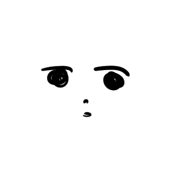

수상하게 온통 새까만 상자는 새로 산 듯 제대로 각이 잡혀있다.
손잡이랑 규격을 봐서는 시내에서 파는 것도 아니고 따로 주문한 상자 같다.
같이 받은 회색 봉투 안에는 편지도 꽂혀있고.
흔들지 말고 조심해서 들고 가라고 하는데…생물은 아니겠지?
대체 뭐야?

예술작품 아닌지?
이게뭐냐면 친구씨가 준 케이크.
무려 손수 만든거다.
자랑하니까 엄마가
‘ㅇ왜..? 너. 너 뭐냐?’
그러게 난 뭘까. 저는 뭐예요 엄마?
이런거 받아도 되나? 늘 느끼는 거지만 나는 정말 과분한 친구를 둔 듯 해
선물을 빙자한 신종 정서고문이라고 봐도 무방한 듯 하다.
차라리 칼을 내 입에 대서 입 와방 커진 다음에 별의 커비처럼 안 씹고 통째로 먹어버리고 싶다.
진짜로 못 썰겠어서 칼들고 그상태로 가만히 서있었다.
누가보면 눈앞에 빈접시를 앞에 두고 앉아있는 동생을 노리는 줄 알았을 것이다.
‘이 녀석을 죽이면..2인분치 케이크가 내 거야..!’
근데 자르니까 안쪽은 더 예술이더라
관객참여형 예술이었네… 이게바로 인터랙션 아트?
맛은… 그냥 세상의 모든 전쟁이 종전하게 되는 맛이었다.
코로나 면역생기면 백신이 아니라 이 케이크 때문일 것 같음.
허언아니고 한입먹자마자 아무생각안들고 천사 라는 단어 하나만 텅 빈 머리 한가운데 둥둥 떠있었다.
OO야. 이렇게 미학적인 맛은 도대체 어떻게 만들어내는거냐?
시판에서는 왜 이런맛이 안 나? 정성의 맛이라는 건가?아니면 내가 눈물흘려서 조금 짭조름해진거?
겨우 정신차리고 앞에있는 동생 슬쩍 봤는데 표정이

아무래도 미뢰에서 전해져오는 축복을 헬창근육뇌가 따라가지 못하고 있는 것 같더라.진짜 이게 말이되나
시대가 21세기나 됐는데 다 먹은 음식을 다시 복구해주는 기술이 아직 없다는게 너무하지 않나 싶다.
과학자들한테 네 케이크를 한조각 먹이면 다들 사태의 심각성을 인지하고 연구에 매진할까?
유튜브에 <아직 세상이 살만한 이유> 라는 제목으로 네 케이크 360도 촬영영상 올라와도 괜찮을 것 같다.
그러고보니 넌 베이킹을 좋아해서 고등학교 때부터 엄청나게 선물했었지, 편지랑 같이.
그래! 우리는 편지를 엄청나게 주고받았었다.
고등학생 신분으로 대단한 글을 쓰는 건 아니었지만 그시절 나에게 무척 소중했던 너한테 주는 편지라 비루한 글솜씨로 열심히도 썼었지.
별로인 센스로 선물까지 동봉해서…으 쪽팔려.
뭐라고 적었었는지 기억도 안 나는데, 넌 아직도 가지고 있을까? 다시 꺼내서 읽어보기도 하고?
아악~! 진짜 쪽팔려!
나는 후회가 엄청 많은 성격이란 말이야. 제발 그냥 버렸거나 상자에 대충 넣어서 처박아 둬 줬으면 좋겠다.
내가 가진 네 편지는 이제 한두개 밖에 없다. 중간에 너한테 엄청나게 화가 나서 다 버려버렸었지 아마.
그렇게 화낼 일도 아니었을텐데…아직도 이건 후회쟁이인 내가 인생 최고로, 정말 최고로 후회하는 일이다.
보잘것 없는 선물과 편지를 좋다고 줬던 것도, 너한테 화를 냈던 것도. 온통 후회투성이인 시절이구만.
아무튼 그 탓에 남은 한두개 편지라도 소중하게 보관해왔다. 앞으로 받는 네 편지는 절대 함부로 대하지 않겠다고 다짐하면서.
그러고보니 이번에도 편지를 받았다. 같이 받은 봉투에 들어있었던 것 같은데…
뭐라고 적혀있나 읽어볼까?
나에겐 쪽팔려서 지워버리고 싶었던 기억이 너에게는 아쉬울 정도로 소중했던 기억인가 보다.
내 모든 후회는 너무나도 좋았던 순간을 더 완벽하게 보내지 못했던 것에서 온다는 걸 생각하면 우리 모두 그때가 무척 소중한가보다.
아끼는 것들을 왜 자꾸만 오롯하게 아껴주지를 못하는지. 너를 보며 반성하게 된다.
근데 서로 너무 과분한 친구를 둔 것 같다고 하는건 진짜 웃긴다. 이게 무슨 삽질임?
앞으로는 너도 나도 좀 더 자신감을 가지자.